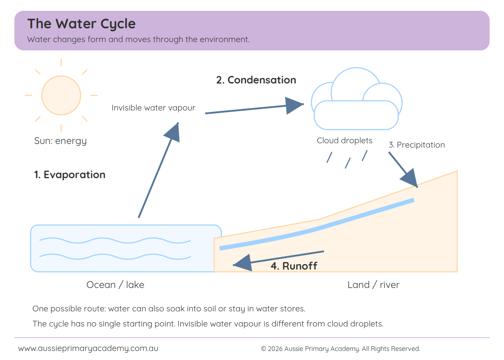

The water cycle is the movement of water between the air, land and oceans. Water changes form as it moves: liquid water can become invisible gas, and that gas can become liquid droplets again. The main processes to learn first are evaporation, condensation and precipitation. Runoff helps explain what happens after rain reaches the ground.
This guide follows the Aussie Primary Academy learning flow: learn, practise, think, challenge and reflect. Start with something your child has seen, then connect it to a scientific word.
Which Australian year level learns the water cycle?
In the current Australian Curriculum v9, the direct water-cycle content description is Year 4 Science, AC9S4U02. It includes water sources and movement through the sky, landscape and ocean, with evaporation, condensation and precipitation.
Year 3 children can explore these ideas as an introduction or extension. Our Year 3 introductory resource is clearly labelled as a Year 4 content preview. It should not be described as required Year 3 water-cycle content. See the current ACARA description.

1. Learn: begin with a disappearing puddle
Ask: “Yesterday there was a puddle here. Today it is smaller. Where might the water have gone?”
Give your child time to explain. “It disappeared” is a useful starting answer, but it does not yet explain the process.
Offer a simple model:
“Some liquid water changed into an invisible gas called water vapour. It went into the air. This change is called evaporation.”
A puddle on soil may also lose water by soaking into the ground. Use that detail to show that water can take more than one route.
Four useful water-cycle words
| Word | What it means | Everyday connection |
|---|---|---|
| Evaporation | Liquid water changes into water vapour, a gas. | A wet shirt dries on the washing line. |
| Condensation | Water vapour changes into liquid droplets. | Droplets form outside a cold drink container. |
| Precipitation | Water falls from clouds as rain, snow or hail. | Rain lands on the school playground. |
| Runoff | Water flows over the land towards lower places. | Rainwater flows down a slope towards a creek. |
Water does not need to boil to evaporate. The Sun supplies energy that helps evaporation in nature. Gravity helps water fall and flow. These ideas are explained in the USGS Water Science School.
2. Practise: turn the diagram into an explanation
Look at the water-cycle diagram together. Start with water in a lake or ocean and follow the arrows.
Ask your child to explain one arrow at a time:
- Evaporation: What happens to the liquid water?
- Condensation: What changes when water vapour cools?
- Precipitation: How does water return from a cloud to the ground?
- Runoff: Where might water travel over the land?
An answer such as “evaporation” names the process. An answer such as “liquid water becomes gas” explains it. Children need both.
For an easy confidence check, ask your child to complete:
“During evaporation, liquid water changes into ______.”
Accept “water vapour” or “gas”. Focus on understanding before perfect spelling.
Diagram reminder: the picture shows one possible route. The water cycle has no single starting point, and every drop does not make the same journey.
3. Think and apply: why is a cold drink wet outside?
Place a cold, sealed plastic drink container on a dry tray. Wipe its outside dry, then look again after a few minutes. An adult should supervise and check for spills or leaks.
If droplets form outside, ask:
“Did this water come through the container, or could it have come from the air?”
Water vapour in the surrounding air can cool at the cold surface and become liquid droplets. This is condensation. The USGS condensation explanation describes this familiar example.
If droplets do not form, record that result honestly. Conditions such as humidity and surface temperature affect what you see.
This observation demonstrates condensation on a surface. It does not recreate the whole water cycle or prove how clouds form.
Common water-cycle mistakes to check
| First idea | A more accurate explanation |
|---|---|
| “The water was destroyed when the puddle dried.” | Some water may have evaporated into the air; some may have soaked into the ground. |
| “A cloud is only invisible water vapour.” | Water vapour is invisible gas. Clouds contain tiny liquid droplets and/or ice crystals. |
| “All rain goes straight to the ocean.” | Rain can enter rivers, soak into soil or stay in puddles, lakes and other stores. |
| “Evaporation only happens when water boils.” | Evaporation can happen at everyday temperatures, as drying washing shows. |
Ask your child to correct one statement in their own words. This reveals more than asking them to copy a definition.
4. Challenge: explain, compare and predict
When the basic ideas are secure, try two short reasoning questions.
Compare: “How are evaporation and condensation different?”
A suitable answer is: “Evaporation changes liquid water into gas. Condensation changes gas into liquid.”
Predict: “Rain falls onto dry soil. Where might some of the water go instead of flowing straight to the ocean? Why?”
Accept a sensible explanation, such as water soaking into soil or collecting in a hollow. Encourage your child to connect the destination to a reason.
The aim is a clear explanation, not the longest answer.
5. Reflect: choose one next step
After practice, ask your child to finish:
- I did well at: naming a process, following arrows or explaining a change.
- I need to practise: one idea that is still confusing.
- My confidence: need help / getting there / can explain.
An adult can add one specific next step: “Explain condensation using the cold-drink example.” That is more useful than “Try harder.”
Later, hide the diagram and ask about a drying puddle or wet shirt. A new example helps you check whether your child can use the idea independently.
Use the APA water-cycle resources
Our focused worksheets follow the APA progression: warm-up and learning, easy-to-medium practice, real-life application, challenges, reflection and adult answers.
Use the labelled diagram for discussion, then encourage your child to explain the processes rather than simply read the labels.
- Year 3 Water Cycle Worksheet (Year 4 content preview, AC9S4U02) — process practice and explanation tasks.
- Year 3 Water Cycle Diagram Worksheet — label and explain the main processes on a diagram.
- Year 4 Water Cycle Worksheet — fuller colour worksheet with answers.
⬇ Year 3 Water Cycle PDF ⬇ Year 3 Diagram PDF Year 4 Water Cycle Page Year 3 Science Worksheets
Quick questions
Is water vapour the same as a cloud?
No. Water vapour is invisible gas. A cloud contains tiny water droplets and/or ice crystals.
Does the water cycle always start with evaporation?
No. Evaporation is a convenient place to begin explaining a diagram, but water is stored and moving through many connected routes.
Why save water if it keeps cycling?
The water cycle does not mean clean, usable water is always available where and when people need it. Reducing unnecessary waste helps protect available supplies.
Can Year 3 children use this resource?
Yes, as guided introductory or extension learning. The direct current Australian Curriculum content link is Year 4 AC9S4U02.
Further reading
- ACARA: current Year 4 water-cycle content
- USGS: evaporation
- USGS: condensation
- USGS: water-cycle diagrams
Curriculum and science sources checked: 8 October 2026. Independent educational resource — not an official ACARA publication.